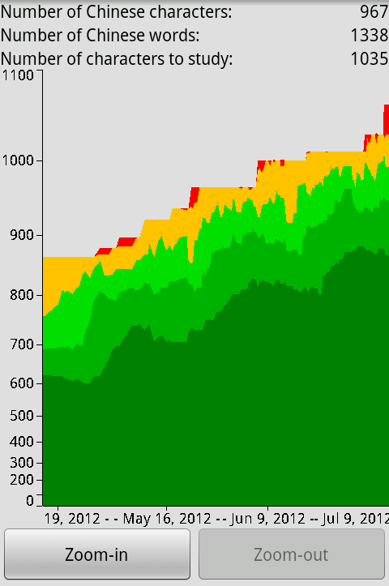

This screen shows you your study progress and gives you some statistics on your vocabulary list.
The colors symbolize how well you know the characters: red means you need to study, the darker green is best shows you characters that you will most likely remember for a long time. You can move left and right by dragging the graph or change the zoom level with the buttons below.
